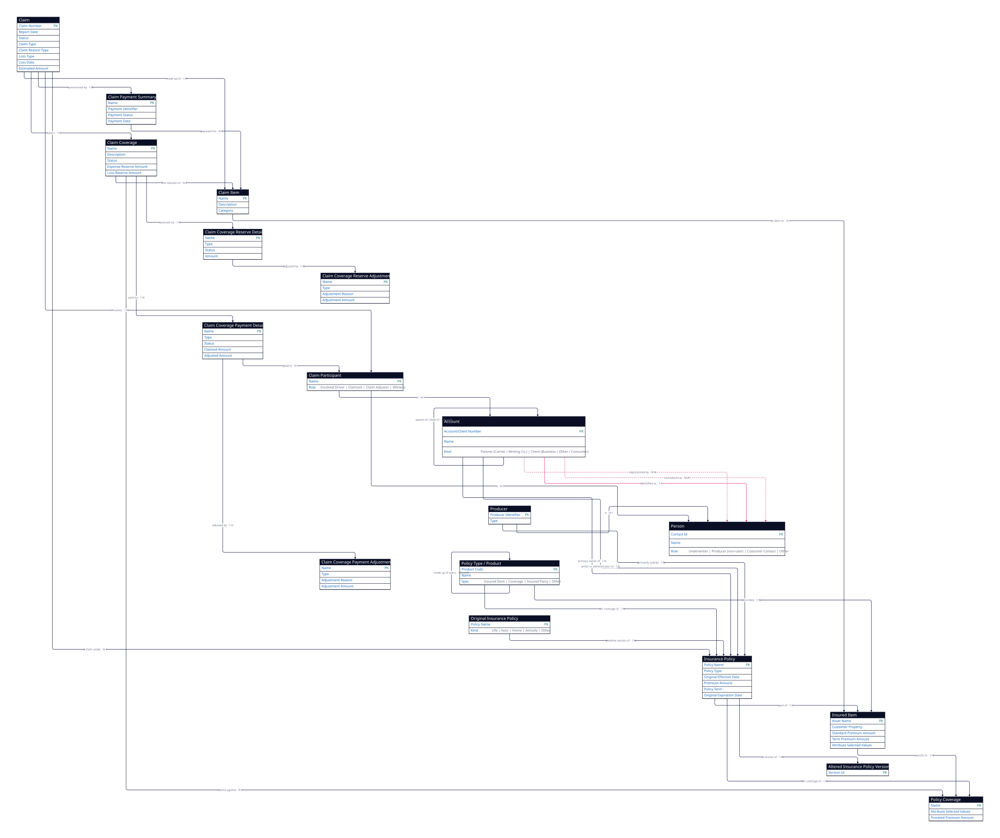

1 · Entities (18 objects — 9 claim-core, 9 policy-seam)
Each entity with why it's used. The pink field is the entity's primary key.
| # | Entity | Why it's used | Key fields | Subtypes / record-types |
|---|---|---|---|---|
| Claim core — new in this view | ||||
| 1 | Claim | The loss / claim record opened against a policy. | Claim Number, Report Date, Status, Claim Type, Claim Reason Type, Loss Type, Loss Date, Estimated Amount | — |
| 2 | Claim Item | One line of the claim — a specific thing being claimed (collision damage, roadside, rental). | Name, Description, Category | — |
| 3 | Claim Coverage | A specific coverage opened on the claim; carries the loss + expense reserve. | Name, Description, Status, Expense Reserve Amount, Loss Reserve Amount | — |
| 4 | Claim Coverage Payment Detail | A payment made out under a claim coverage. | Name, Type, Status, Claimed Amount, Adjusted Amount | — |
| 5 | Claim Coverage Payment Adjustment | A correction / adjustment to a payment. | Name, Type, Adjustment Reason, Adjustment Amount | — |
| 6 | Claim Coverage Reserve Detail | Money set aside (reserved) to pay a future claim under a coverage. | Name, Type, Status, Amount | — |
| 7 | Claim Coverage Reserve Adjustment | A correction / adjustment to a reserve. | Name, Type, Adjustment Reason, Adjustment Amount | — |
| 8 | Claim Payment Summary | The roll-up of all payments made on the claim. | Name, Payment Identifier, Payment Status, Payment Date | — |
| 9 | Claim Participant | A party on the claim, with a role. | Name | Involved Driver Role; Claimant Role; Claim Adjuster Role; Witness |
| Policy seam — repeated from the policy side, where the claim attaches | ||||
| 10 | Insurance Policy | The policy the claim is filed under. | Policy Name, Policy Type, Original Effective Date, Premium Amount, Policy Term, Original Expiration Date | — |
| 11 | Insured Item | The covered thing (the vehicle) being claimed against. | Asset Name, Customer Property, Standard Premium Amount, Term Premium Amount, Attribute Selected Values | — |
| 12 | Policy Coverage | The policy coverage a claim coverage claims against. | Name, Attribute Selected Values, Prorated Premium Amount | — |
| 13 | Policy Type / Product | The product the policy is built from, plus its specs. | Product Code, Name | Insured Item Spec; Coverage Spec; Insured Party Spec; Other Spec |
| 14 | Original Insurance Policy | The baseline policy the current one derives from. | Policy Name | Individual Life Policy; Auto Policy; Home Policy; Individual Annuity; Other Policy |
| 15 | Altered Insurance Policy Version | A historical version of the policy (what it looked like before a change). | Version Id | — |
| 16 | Account | The customer being claimed for, plus partner orgs. | Account / Client Number, Name | Partner (Internal Org) → Carrier, Writing Company; Client → Business / Other / Consumer |
| 17 | Producer | The producer that sold the policy. | Producer Identifier, Type | — |
| 18 | Person | The people involved — adjuster, underwriter, customer contact, driver. | Contact Id, Name | Partner or Captive or Underwriter; User or Partner User; Non-User Producer; Client or Other Person |
2 · Relationships (32 relationships — 16 claim-core, 16 policy-seam)
A 1:N B = one A, many B. The Relationship column is the verb (the named edge): read it as From · relationship · To. M:N rows (pink) are junctions.
| # | From | Relationship | Card. | To | What it means (plain English) |
|---|---|---|---|---|---|
| Claim core | |||||
| 1 | Claim | made up of | 1:N | Claim Item | a claim is broken into line items (collision, rental, roadside). |
| 2 | Claim Item | a claim on | N:1 | Insured Item | each line is about a specific covered thing (e.g. truck #12). |
| 3 | Claim Coverage | line claimed on | N:1 | Claim Item | the coverage being claimed is tied to a claim item. |
| 4 | Claim Coverage | claims against | N:1 | Policy Coverage | it draws on a specific coverage in the policy. |
| 5 | Claim | opens | 1:N | Claim Coverage | a claim opens the coverages it will pay under. |
| 6 | Claim Coverage | paid via | 1:N | Claim Coverage Payment Detail | payments made out under the coverage. |
| 7 | Claim Coverage Payment Detail | adjusted by | 1:N | Claim Coverage Payment Adjustment | corrections to a payment. |
| 8 | Claim Coverage | reserved via | 1:N | Claim Coverage Reserve Detail | money set aside (reserved) under the coverage. |
| 9 | Claim Coverage Reserve Detail | adjusted by | 1:N | Claim Coverage Reserve Adjustment | corrections to a reserve. |
| 10 | Claim Coverage Payment Detail | paid to | N:1 | Claim Participant | who received the payment (the recipient). |
| 11 | Claim | summarized by | 1:N | Claim Payment Summary | the roll-up of all payments on the claim. |
| 12 | Claim Payment Summary | payment for | N:1 | Claim Item | which claim item the payment summary covers. |
| 13 | Claim | involves | 1:N | Claim Participant | the people on the claim (driver, claimant, adjuster, witness). |
| 14 | Claim Participant | is | N:1 | Account | the participant is an account (org). |
| 15 | Claim Participant | is | N:1 | Person | the participant is a person (contact). |
| 16 | Claim | a claim under | N:1 | Insurance Policy | the policy the claim is filed against. |
| Policy seam — same edges as the Policy Management view | |||||
| 17 | Insurance Policy | part of | 1:N | Insured Item | a policy covers many insured items (e.g. a 38-truck fleet). |
| 18 | Insured Item | specific to | 1:N | Policy Coverage | a coverage attached to a specific item. |
| 19 | Insurance Policy | for coverage of | 1:N | Policy Coverage | the policy's coverages. |
| 20 | Policy Type / Product | for coverage of | 1:N | Insurance Policy | many policies are issued from one product. |
| 21 | Policy Type / Product | made up of | 1:N | Spec (Item / Coverage / Party) | the product's specs — what it offers. |
| 22 | Policy Type / Product | describes | 1:N | Insured Item | the item is rated / described under the product spec. |
| 23 | Insurance Policy | a version of | 1:N | Altered Insurance Policy Version | a policy keeps historical versions. |
| 24 | Original Insurance Policy | baseline version of | 1:N | Insurance Policy | the original / base policy the current one derives from. |
| 25 | Account | primary owner of | 1:N | Insurance Policy | the customer that owns the policy. |
| 26 | Account (Carrier / Writing Co.) | writer or administrator of | 1:N | Insurance Policy | the carrier that writes / administers the policy. |
| 27 | Producer | primarily sold by | 1:N | Insurance Policy | the producer that sold the policy. |
| 28 | Producer | is | N:1 | Person | a producer is a person. |
| 29 | Account | parent of / child of | 1:N (self) | Account | account / partner-org hierarchy. |
| 30 | Account | represented by | M:N | Person | an account is linked to its people (contacts, signers). |
| 31 | Account (Client) | identified as | 1:1 | Person | a consumer / sole-proprietor account is the same as one person. |
| 32 | Account | considered as | M:N | Person / Party | an account is also a party (account-party duality). |
Validation notes
- Claim core vs policy seam. Entities 1–9 and relationships 1–16 are the claim-specific subtree (new in this view). Entities 10–18 and relationships 17–32 are the policy-side entities the claim attaches to — the same objects drawn in the Policy Management view, repeated here as the seam where the two views join.
- Cardinalities verified vs the Salesforce FSC object reference, not eyeballed off the diagram's crow's-feet.
ClaimItemhangs offClaim(#1) and references the insured asset (#2);ClaimCoverageattaches to both the claim (#5) and its item (#3) and claims against aInsurancePolicyCoverage(#4). - M:N junctions (2, pink): Account ↔ Person "represented by" (#30) and the Account ↔ Party duality "considered as" (#32). 1:1: Account ↔ Person "identified as" (#31). Self-hierarchy: Account (#29).
- Two payment/owner edges kept distinct: Account "primary owner of" a policy (#25, the customer) vs. Carrier / Writing Company "writer or administrator of" the policy (#26, the carrier).
Source: Salesforce “Insurance Claim Management with FSC Insurance” ERD (March 2021) + Salesforce FSC object reference (cardinality verification). Faithful source model — Qubru mapping is a separate step.
3 · Diagram (rendered from D2 — 18 entities · 32 relationships)
Code-based diagram (D2) of the exact same model in the tables above. Source: 2026-06-14-claim-management.d2 · pink-dashed = M:N junctions (Account ↔ Person, #30 & #32). Claim is the hub of the claim core; Insurance Policy is the seam to the policy side.
